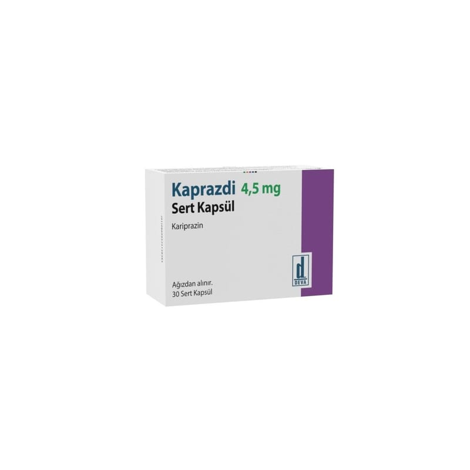

Kaprazdi 4,5 mg Sert Kapsül

Ne için kullanılır
KT · Bölüm 1KAPRAZDİ içi beyaz veya sarımsı beyaz renkli granüler toz ile dolu, yeşil - yeşil renkli sert kapsüldür. Bir kutu içerisinde 30 adet kapsül içeren blister ambalajlarda kullanma talimatı ile birlikte sunulmaktadır.
KAPRAZDİ etkin madde olarak kariprazin içerir ve antipsikotik adı verilen ilaç grubuna aittir. KAPRAZDİ yetişkinlerde şizofreniyi tedavi etmek için kullanılır. Bu ilacı kullanmaya başlamadan önce bu KULLANMA TALİMATINI dikkatlice okuyunuz, çünkü sizin için önemli bilgiler içermektedir.
Bu kullanma talimatını saklayınız. Daha sonra tekrar okumaya ihtiyaç duyabilirsiniz. Eğer ilave sorularınız olursa, lütfen doktorunuza veya eczacınıza danışınız. Bu ilaç kişisel olarak sizin için reçete edilmiştir, başkalarına vermeyiniz. Bu ilacın kullanımı sırasında, doktora veya hastaneye gittiğinizde doktorunuza bu ilacı kullandığınızı söyleyiniz. Bu talimatta yazılanlara aynen uyunuz. İlaç hakkında size önerilen dozun dışında yüksek veya düşük doz kullanmayınız.
Şizofreni; var olmayan sesleri işitme, görme veya algılama (halüsinasyon), şüphe duyma durumu, yanlış inanç, tutarsız konuşma ve davranış ve duygusal durgunluk gibi belirtiler ile karakterizedir. Bu rahatsızlığı olan kişiler aynı zamanda kendilerini depresif, suçlu, endişeli, gergin hissedebilirler.